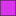

<!doctype html>
<html lang="en">
    <head>
        <meta charset="utf-8">
        <meta http-equiv="X-UA-Compatible" content="IE=edge">
        <meta name="viewport" content="initial-scale=1,user-scalable=no,maximum-scale=1,width=device-width">
        <meta name="mobile-web-app-capable" content="yes">
        <meta name="apple-mobile-web-app-capable" content="yes">
        <link rel="stylesheet" href="css/leaflet.css">
        <link rel="stylesheet" href="css/L.Control.Layers.Tree.css">
        <link rel="stylesheet" href="css/L.Control.Locate.min.css">
        <link rel="stylesheet" href="css/qgis2web.css">
        <link rel="stylesheet" href="css/fontawesome-all.min.css">
        <link rel="stylesheet" href="css/leaflet-search.css">
        <link rel="stylesheet" href="css/leaflet-measure.css">
        <style>
        #map {
            width: 851px;
            height: 493px;
        }
        </style>
        <title></title>
    </head>
    <body>
        <div id="map">
        </div>
        <script src="js/qgis2web_expressions.js"></script>
        <script src="js/leaflet.js"></script>
        <script src="js/L.Control.Layers.Tree.min.js"></script>
        <script src="js/L.Control.Locate.min.js"></script>
        <script src="js/leaflet.rotatedMarker.js"></script>
        <script src="js/leaflet.pattern.js"></script>
        <script src="js/leaflet-hash.js"></script>
        <script src="js/Autolinker.min.js"></script>
        <script src="js/rbush.min.js"></script>
        <script src="js/labelgun.min.js"></script>
        <script src="js/labels.js"></script>
        <script src="js/leaflet-measure.js"></script>
        <script src="js/leaflet-search.js"></script>
        <script src="data/fixgeo_0.js"></script>
        <script src="data/rubber_1.js"></script>
        <script src="data/oilpalm_2.js"></script>
        <script>
        var map = L.map('map', {
            zoomControl:false, maxZoom:28, minZoom:1
        }).fitBounds([[-1.1913258572792293,133.17706855295117],[-0.530118823647675,134.32037765998413]]);
        var hash = new L.Hash(map);
        map.attributionControl.setPrefix('<a href="https://github.com/tomchadwin/qgis2web" target="_blank">qgis2web</a> &middot; <a href="https://leafletjs.com" title="A JS library for interactive maps">Leaflet</a> &middot; <a href="https://qgis.org">QGIS</a>');
        var autolinker = new Autolinker({truncate: {length: 30, location: 'smart'}});
        // remove popup's row if "visible-with-data"
        function removeEmptyRowsFromPopupContent(content, feature) {
         var tempDiv = document.createElement('div');
         tempDiv.innerHTML = content;
         var rows = tempDiv.querySelectorAll('tr');
         for (var i = 0; i < rows.length; i++) {
             var td = rows[i].querySelector('td.visible-with-data');
             var key = td ? td.id : '';
             if (td && td.classList.contains('visible-with-data') && feature.properties[key] == null) {
                 rows[i].parentNode.removeChild(rows[i]);
             }
         }
         return tempDiv.innerHTML;
        }
        // add class to format popup if it contains media
		function addClassToPopupIfMedia(content, popup) {
			var tempDiv = document.createElement('div');
			tempDiv.innerHTML = content;
			if (tempDiv.querySelector('td img')) {
				popup._contentNode.classList.add('media');
					// Delay to force the redraw
					setTimeout(function() {
						popup.update();
					}, 10);
			} else {
				popup._contentNode.classList.remove('media');
			}
		}
        var zoomControl = L.control.zoom({
            position: 'topleft'
        }).addTo(map);
        L.control.locate({locateOptions: {maxZoom: 19}}).addTo(map);
        var measureControl = new L.Control.Measure({
            position: 'topleft',
            primaryLengthUnit: 'meters',
            secondaryLengthUnit: 'kilometers',
            primaryAreaUnit: 'sqmeters',
            secondaryAreaUnit: 'hectares'
        });
        measureControl.addTo(map);
        document.getElementsByClassName('leaflet-control-measure-toggle')[0].innerHTML = '';
        document.getElementsByClassName('leaflet-control-measure-toggle')[0].className += ' fas fa-ruler';
        var bounds_group = new L.featureGroup([]);
        function setBounds() {
        }
        function pop_fixgeo_0(feature, layer) {
            var popupContent = '<table>\
                    <tr>\
                        <td colspan="2">' + (feature.properties['fid'] !== null ? autolinker.link(String(feature.properties['fid']).replace(/'/g, '\'').toLocaleString()) : '') + '</td>\
                    </tr>\
                    <tr>\
                        <td colspan="2">' + (feature.properties['objectid'] !== null ? autolinker.link(String(feature.properties['objectid']).replace(/'/g, '\'').toLocaleString()) : '') + '</td>\
                    </tr>\
                    <tr>\
                        <td colspan="2">' + (feature.properties['type'] !== null ? autolinker.link(String(feature.properties['type']).replace(/'/g, '\'').toLocaleString()) : '') + '</td>\
                    </tr>\
                    <tr>\
                        <td colspan="2">' + (feature.properties['percent'] !== null ? autolinker.link(String(feature.properties['percent']).replace(/'/g, '\'').toLocaleString()) : '') + '</td>\
                    </tr>\
                    <tr>\
                        <td colspan="2">' + (feature.properties['spec_1'] !== null ? autolinker.link(String(feature.properties['spec_1']).replace(/'/g, '\'').toLocaleString()) : '') + '</td>\
                    </tr>\
                    <tr>\
                        <td colspan="2">' + (feature.properties['spec_2'] !== null ? autolinker.link(String(feature.properties['spec_2']).replace(/'/g, '\'').toLocaleString()) : '') + '</td>\
                    </tr>\
                    <tr>\
                        <td colspan="2">' + (feature.properties['spec_3'] !== null ? autolinker.link(String(feature.properties['spec_3']).replace(/'/g, '\'').toLocaleString()) : '') + '</td>\
                    </tr>\
                    <tr>\
                        <td colspan="2">' + (feature.properties['spec_4'] !== null ? autolinker.link(String(feature.properties['spec_4']).replace(/'/g, '\'').toLocaleString()) : '') + '</td>\
                    </tr>\
                    <tr>\
                        <td colspan="2">' + (feature.properties['spec_5'] !== null ? autolinker.link(String(feature.properties['spec_5']).replace(/'/g, '\'').toLocaleString()) : '') + '</td>\
                    </tr>\
                    <tr>\
                        <td colspan="2">' + (feature.properties['spec_simp'] !== null ? autolinker.link(String(feature.properties['spec_simp']).replace(/'/g, '\'').toLocaleString()) : '') + '</td>\
                    </tr>\
                    <tr>\
                        <td colspan="2">' + (feature.properties['country'] !== null ? autolinker.link(String(feature.properties['country']).replace(/'/g, '\'').toLocaleString()) : '') + '</td>\
                    </tr>\
                    <tr>\
                        <td colspan="2">' + (feature.properties['type_text'] !== null ? autolinker.link(String(feature.properties['type_text']).replace(/'/g, '\'').toLocaleString()) : '') + '</td>\
                    </tr>\
                    <tr>\
                        <td colspan="2">' + (feature.properties['spec_org'] !== null ? autolinker.link(String(feature.properties['spec_org']).replace(/'/g, '\'').toLocaleString()) : '') + '</td>\
                    </tr>\
                    <tr>\
                        <td colspan="2">' + (feature.properties['image'] !== null ? autolinker.link(String(feature.properties['image']).replace(/'/g, '\'').toLocaleString()) : '') + '</td>\
                    </tr>\
                </table>';
            var content = removeEmptyRowsFromPopupContent(popupContent, feature);
			layer.on('popupopen', function(e) {
				addClassToPopupIfMedia(content, e.popup);
			});
			layer.bindPopup(content, { maxHeight: 400 });
        }

        function style_fixgeo_0_0(feature) {
            switch(String(feature.properties['spec_simp'])) {
                case 'Oil palm':
                    return {
                pane: 'pane_fixgeo_0',
                opacity: 1,
                color: 'rgba(35,35,35,1.0)',
                dashArray: '',
                lineCap: 'butt',
                lineJoin: 'miter',
                weight: 1.0, 
                fill: true,
                fillOpacity: 1,
                fillColor: 'rgba(217,53,235,1.0)',
                interactive: true,
            }
                    break;
                case 'Sagu':
                    return {
                pane: 'pane_fixgeo_0',
                opacity: 1,
                color: 'rgba(35,35,35,1.0)',
                dashArray: '',
                lineCap: 'butt',
                lineJoin: 'miter',
                weight: 1.0, 
                fill: true,
                fillOpacity: 1,
                fillColor: 'rgba(211,116,103,1.0)',
                interactive: true,
            }
                    break;
                case 'Kakao':
                    return {
                pane: 'pane_fixgeo_0',
                opacity: 1,
                color: 'rgba(35,35,35,1.0)',
                dashArray: '',
                lineCap: 'butt',
                lineJoin: 'miter',
                weight: 1.0, 
                fill: true,
                fillOpacity: 1,
                fillColor: 'rgba(44,218,134,1.0)',
                interactive: true,
            }
                    break;
                case 'Rubber':
                    return {
                pane: 'pane_fixgeo_0',
                opacity: 1,
                color: 'rgba(35,35,35,1.0)',
                dashArray: '',
                lineCap: 'butt',
                lineJoin: 'miter',
                weight: 1.0, 
                fill: true,
                fillOpacity: 1,
                fillColor: 'rgba(175,232,52,1.0)',
                interactive: true,
            }
                    break;
            }
        }
        map.createPane('pane_fixgeo_0');
        map.getPane('pane_fixgeo_0').style.zIndex = 400;
        map.getPane('pane_fixgeo_0').style['mix-blend-mode'] = 'normal';
        var layer_fixgeo_0 = new L.geoJson(json_fixgeo_0, {
            attribution: '',
            interactive: true,
            dataVar: 'json_fixgeo_0',
            layerName: 'layer_fixgeo_0',
            pane: 'pane_fixgeo_0',
            onEachFeature: pop_fixgeo_0,
            style: style_fixgeo_0_0,
        });
        bounds_group.addLayer(layer_fixgeo_0);
        map.addLayer(layer_fixgeo_0);
        function pop_rubber_1(feature, layer) {
            var popupContent = '<table>\
                    <tr>\
                        <td colspan="2">' + (feature.properties['id'] !== null ? autolinker.link(String(feature.properties['id']).replace(/'/g, '\'').toLocaleString()) : '') + '</td>\
                    </tr>\
                    <tr>\
                        <td colspan="2">' + (feature.properties['rubber'] !== null ? autolinker.link(String(feature.properties['rubber']).replace(/'/g, '\'').toLocaleString()) : '') + '</td>\
                    </tr>\
                </table>';
            var content = removeEmptyRowsFromPopupContent(popupContent, feature);
			layer.on('popupopen', function(e) {
				addClassToPopupIfMedia(content, e.popup);
			});
			layer.bindPopup(content, { maxHeight: 400 });
        }

        function style_rubber_1_0() {
            return {
                pane: 'pane_rubber_1',
                radius: 4.0,
                opacity: 1,
                color: 'rgba(35,35,35,1.0)',
                dashArray: '',
                lineCap: 'butt',
                lineJoin: 'miter',
                weight: 1,
                fill: true,
                fillOpacity: 1,
                fillColor: 'rgba(213,180,60,1.0)',
                interactive: true,
            }
        }
        map.createPane('pane_rubber_1');
        map.getPane('pane_rubber_1').style.zIndex = 401;
        map.getPane('pane_rubber_1').style['mix-blend-mode'] = 'normal';
        var layer_rubber_1 = new L.geoJson(json_rubber_1, {
            attribution: '',
            interactive: true,
            dataVar: 'json_rubber_1',
            layerName: 'layer_rubber_1',
            pane: 'pane_rubber_1',
            onEachFeature: pop_rubber_1,
            pointToLayer: function (feature, latlng) {
                var context = {
                    feature: feature,
                    variables: {}
                };
                return L.circleMarker(latlng, style_rubber_1_0(feature));
            },
        });
        bounds_group.addLayer(layer_rubber_1);
        map.addLayer(layer_rubber_1);
        function pop_oilpalm_2(feature, layer) {
            var popupContent = '<table>\
                    <tr>\
                        <th scope="row">id</th>\
                        <td>' + (feature.properties['id'] !== null ? autolinker.link(String(feature.properties['id']).replace(/'/g, '\'').toLocaleString()) : '') + '</td>\
                    </tr>\
                </table>';
            var content = removeEmptyRowsFromPopupContent(popupContent, feature);
			layer.on('popupopen', function(e) {
				addClassToPopupIfMedia(content, e.popup);
			});
			layer.bindPopup(content, { maxHeight: 400 });
        }

        function style_oilpalm_2_0() {
            return {
                pane: 'pane_oilpalm_2',
                radius: 4.0,
                opacity: 1,
                color: 'rgba(35,35,35,1.0)',
                dashArray: '',
                lineCap: 'butt',
                lineJoin: 'miter',
                weight: 1,
                fill: true,
                fillOpacity: 1,
                fillColor: 'rgba(255,158,23,1.0)',
                interactive: true,
            }
        }
        map.createPane('pane_oilpalm_2');
        map.getPane('pane_oilpalm_2').style.zIndex = 402;
        map.getPane('pane_oilpalm_2').style['mix-blend-mode'] = 'normal';
        var layer_oilpalm_2 = new L.geoJson(json_oilpalm_2, {
            attribution: '',
            interactive: true,
            dataVar: 'json_oilpalm_2',
            layerName: 'layer_oilpalm_2',
            pane: 'pane_oilpalm_2',
            onEachFeature: pop_oilpalm_2,
            pointToLayer: function (feature, latlng) {
                var context = {
                    feature: feature,
                    variables: {}
                };
                return L.circleMarker(latlng, style_oilpalm_2_0(feature));
            },
        });
        bounds_group.addLayer(layer_oilpalm_2);
        map.addLayer(layer_oilpalm_2);
        var overlaysTree = [
            {label: ' oil palm', layer: layer_oilpalm_2},
            {label: ' rubber', layer: layer_rubber_1},
            {label: 'fix geo<br /><table><tr><td style="text-align: center;"></td><td>Oil palm</td></tr><tr><td style="text-align: center;"></td><td>Sagu</td></tr><tr><td style="text-align: center;"></td><td>Kakao</td></tr><tr><td style="text-align: center;"></td><td>Rubber</td></tr></table>', layer: layer_fixgeo_0},]
        var lay = L.control.layers.tree(null, overlaysTree,{
            //namedToggle: true,
            //selectorBack: false,
            //closedSymbol: '&#8862; &#x1f5c0;',
            //openedSymbol: '&#8863; &#x1f5c1;',
            //collapseAll: 'Collapse all',
            //expandAll: 'Expand all',
            collapsed: true,
        });
        lay.addTo(map);
        setBounds();
        var i = 0;
        layer_fixgeo_0.eachLayer(function(layer) {
            var context = {
                feature: layer.feature,
                variables: {}
            };
            layer.bindTooltip((layer.feature.properties['spec_1'] !== null?String('<div style="color: #323232; font-size: 10pt; font-family: \'Open Sans\', sans-serif;">' + layer.feature.properties['spec_1']) + '</div>':''), {permanent: true, offset: [-0, -16], className: 'css_fixgeo_0'});
            labels.push(layer);
            totalMarkers += 1;
              layer.added = true;
              addLabel(layer, i);
              i++;
        });
        map.addControl(new L.Control.Search({
            layer: layer_oilpalm_2,
            initial: false,
            hideMarkerOnCollapse: true,
            propertyName: 'id'}));
        document.getElementsByClassName('search-button')[0].className +=
         ' fa fa-binoculars';
        resetLabels([layer_fixgeo_0]);
        map.on("zoomend", function(){
            resetLabels([layer_fixgeo_0]);
        });
        map.on("layeradd", function(){
            resetLabels([layer_fixgeo_0]);
        });
        map.on("layerremove", function(){
            resetLabels([layer_fixgeo_0]);
        });
        </script>
    </body>
</html>
